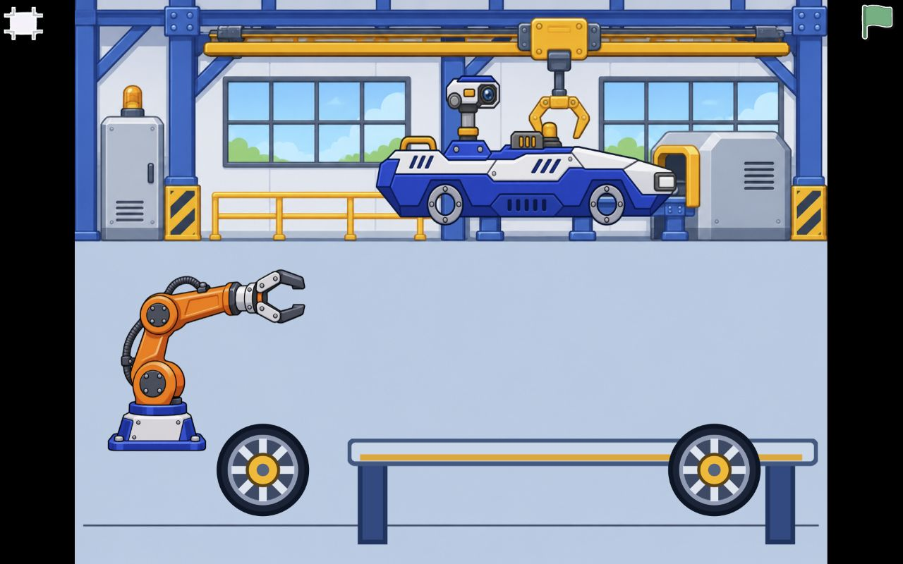
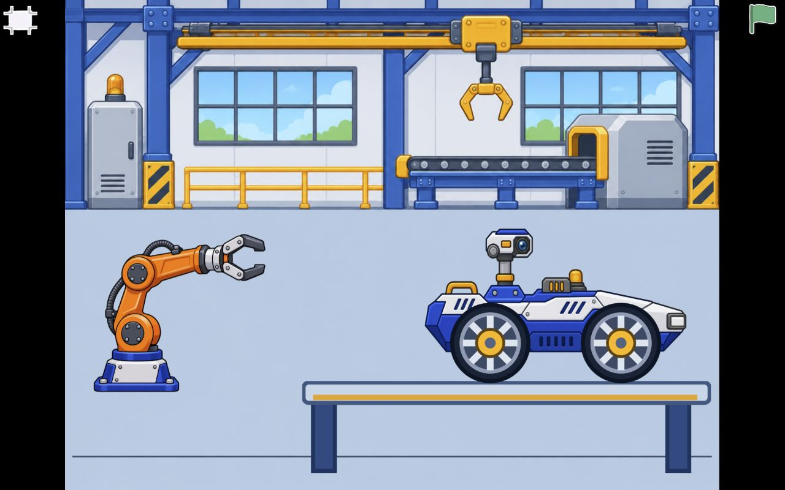

6-18 min
1. Șasiul
Robotul comandă coborârea șasiului pe banc. Confirmarea vine după montaj.
Lecția 07 · 60 de minute · robotică pe ecran
Fabrica are o comandă: un rover pentru transportul pieselor. Montăm șasiul și roțile, verificăm farul și trimitem roverul la lucru. Nicio plecare înainte de terminarea montajului.
Proiect de pornire fără cod · SJR
Plan + toate programele cu capturi · PDF · Ghidul profesorului

Primele 6 minute: povestea și citirea fabricii. Ultimele 3 minute: probă și salvare. Puzzle-ul greu este pentru toți.
6-18 min
Robotul comandă coborârea șasiului pe banc. Confirmarea vine după montaj.
18-32 min
Un mesaj pornește ambele roți. Au trasee diferite și trebuie să ajungă fiecare la butucul său.
32-47 min · dificil · pentru toți
Roata dreaptă merge lent. Farul așteaptă ambele roți; după două clipiri apare roverul complet și pleacă.
47-57 min · creație
Alt ritm al farului, alte pauze sau Pop. Păstrăm montajul și plecarea după probă.
Rezervă · +5-8 min
O roată se montează complet înainte să pornească cealaltă. Comparăm cu montajul în paralel.
Rezervă · +8-10 min
Roverul face două dus-întorsuri, cu proba farului la fiecare revenire. Plecarea finală rămâne în afara buclei.
După montaj, ascundem piesele și arătăm desenul complet în aceeași poziție. Acesta se deplasează cu 3 pași. Brațul industrial comandă instalația; articulațiile lui nu sunt animate.

PDF-ul are 18 pagini: plan concis, pregătire și capturi reale ale tuturor programelor, inclusiv firele neschimbate și ambele rezerve.
Ghid complet · PDF cu capturi · Lista proiectelor · PDF-ul cursului
Pe laptop, în ScratchJr Desktop Reborn: Open în galerie, alegi SJR-ul, apoi cardul fabricii. Stop dacă rulează, Reset Characters, apoi un steag.
Pe tablete pregătești doar starterul înaintea orei. Verifică importul și redeschiderea pe un Lenovo al școlii. Instrucțiuni de import.
Șapte importuri și zece rulări în browser: montaj în paralel și pe rând, așteptarea roții lente, clipirile, cele două probe, resetarea, reluarea și redeschiderea. Raport și dovezi.
Verificarea nu include un Lenovo fizic. Portul web raportează erori la biblioteca globală de imagini; resursele incluse în proiecte s-au păstrat și au funcționat.
Povestea cu două finaluri · Ghid vechi · PDF vechi · Cartonașe vechi · ZIP vechi.